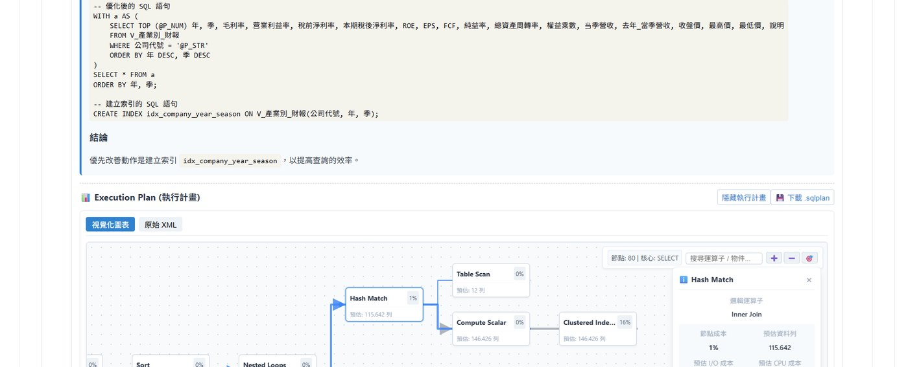

DB Agent: AI diagnosis for slow queries
Monitors SQL Server performance in real time. When a slow query shows up, the statement and its execution plan go to a locally hosted LLM, which returns a bottleneck analysis and index suggestions, and the dashboard draws the execution plan graphically. The model runs on my own machine, so no data has to leave the company.
- Tech
- Vue 3, .NET 8, SignalR, Channels, SQL Server, Ollama
- Status
- Personal project (proof of concept)